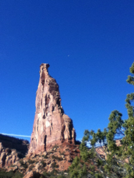
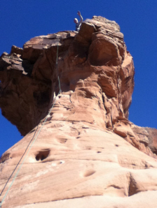
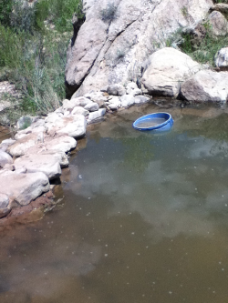
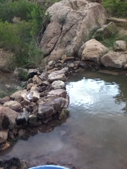
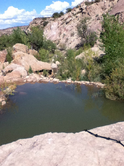
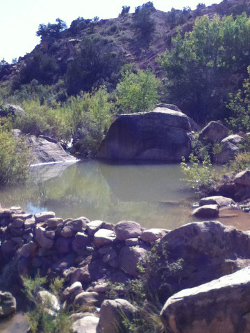

A little about us
I have been in the tree industry for over 20 years going all the way back to when I was stationed at Ft. Lewis, Wa.with the 1st SFG.
There's a little saying out there that if you can master those tree's in the North West, you can go anywhere in the World.
They just don't get much bigger or more difficult then that. For the most part I grew up in Colorado.
My Dad lived in Aurora and my Mom here in Grand Junction.
I have been raising my two Boy's for the last 10 years or so. My oldest Son, "John" Cody, is attending College at Colorado Mesa University studying computer science.
No doubt he will go on to develop the next computer game that transforms the industry.
My other Son, Jake, just graduated from high school and is starting to work full time in the tree care industry.
He has always had an interest in working with trees and has already been on hundreds of tree jobs over the years.
He got his first tree climbing belt when He was 5 years old when I couldn't keep him from free climbing all the tree's in the neighborhood.
He however had to wait til he was 16 before he could go up with a chainsaw. Amazing having two kid's so close together and yet completely different in their interests.
When we are not working it's a good bet we are out doing something in the Outdoors. Any good excuse is good enough for me.
I suppose if you make a career working outside all your life then that's where you must prefer to be.
Some days it's just nice to go sit by the river after work and catch a few fish or take a drive up to one of our man made swimming holes we have created and have a Bar-B-Que.
There is so many hidden gems around Grand Junction we have yet to explore.
In addition to becoming an exceptional tree climber, Jake has also taken up rock climbing and bouldering.
Grand Junction truly has some World Class climbing around here.
The first picture below is hiking up to the base of Independence Monument.
The second photo is the last leg of the climb to get to the top.


Speaking about an Oasis, I originally didn't want to put out on the web how to get to some of our really neat places but I figured why not?
We always have a good time going there and maybe you will too. One place really close to Grand Junction is not to far up Unaweep Canyon.
What started out as building a small rock dam to go wading on a hot summer day, quickly grew to a much larger and deeper swimming hole about another 1/2 mile up the creek.
The first picture is our first completed Dam that we quickly out grew.
It's easy to get to and a great place for wading but just a little to small and not deep enough to go swimming.


The picture below is on top of a large rock looking down into another swimming hole.
It top's out at around 8' deep. It's Plenty deep enough to use the rock as a diving board.
It's a little harder to get to this hidden paradise, but then again you very rarly see anyone while your there.
It really is an Oasis right in the middle of the High Desert less then 10 miles from Grand Junction.


When we're not working on one of our own swimming holes near Grand Junction, it's always a good time to visit one of the natural swimming holes.
One of our favorite places to do a little cliff jumping and swimming has to be up at the Pot Holes.
The potholes are located approx. 10 miles West of Glade Park on top the Monument.
There is nothing more relaxing then doing a little fishing after a hard day at the office.
Grand Junction is of course famous for where the Colorado River and the Gunnison River come together creating a natural habitat for several species of wildlife right here in town.
Unfortunately, compared to 30 years ago, gaining access to the good fishing holes has become increasingly more difficult.
There are however a few good holes where the fishing is still decent and relatively good access to get to.
Oddly enough, we seem to catch a whole lot more of the so-called endangered fish then we do of the targeted fish.
Either way, most of the time we let them all go so we can catch them another day.